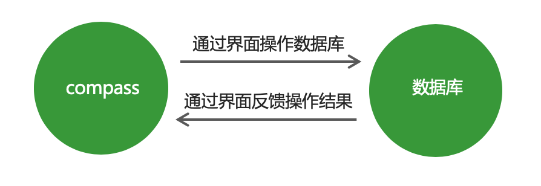
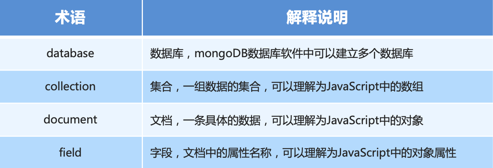

1. 数据库概述及环境搭建
1.1 为什么要使用数据库
- 动态网站中的数据都是存储在数据库中的
- 数据库可以用来持久存储客户端通过表单收集的用户信息
- 数据库软件本身可以对数据进行高效的管理
1.2 什么是数据库
数据库即存储数据的仓库，可以将数据进行有序的分门别类的存储。它是独立于语言之外的软件，可以通过API去操作它。
常见的数据库软件有：mysql、mongoDB、oracle。
1.3 MongoDB数据库下载安装
下载地址：https://www.mongodb.com/download-center/community
1.4 MongoDB可视化软件
MongoDB可视化操作软件，是使用图形界面操作数据库的一种方式。

1.5 数据库相关概念
在一个数据库软件中可以包含多个数据仓库，在每个数据仓库中可以包含多个数据集合，每个数据集合中可以包含多条文档（具体的数据）。

1.6 Mongoose第三方包
- 使用Node.js操作MongoDB数据库需要依赖Node.js第三方包mongoose
- 使用
npm install mongoose命令下载
1.7 启动MongoDB
在命令行工具中运行net start mongoDB即可启动MongoDB，否则MongoDB将无法连接。
1.8 数据库连接
使用mongoose提供的connect方法即可连接数据库。
mongoose.connect('mongodb://localhost/playground')
.then(() => console.log('数据库连接成功'))
.catch(err => console.log('数据库连接失败', err));
1.9 创建数据库
在MongoDB中不需要显式创建数据库，如果正在使用的数据库不存在，MongoDB会自动创建。
2. MongoDB增删改查操作
2.1 创建集合
创建集合分为两步，一是对集合设定规则，二是创建集合，创建mongoose.Schema构造函数的实例即可创建集合。
// 设定集合规则
const courseSchema = new mongoose.Schema({
name: String,
author: String,
isPublished: Boolean
});
// 创建集合并应用规则
const Course = mongoose.model('Course', courseSchema); // courses2.2 创建文档
创建文档实际上就是向集合中插入数据。
分为两步：
- 创建集合实例。
- 调用实例对象下的save方法将数据保存到数据库中。
// 创建集合实例
const course = new Course({
name: 'Node.js course',
author: 'szl',
tags: ['node', 'backend'],
isPublished: true
});
// 将数据保存到数据库中
course.save();Course.create({name: 'JavaScript基础', author: 'szl', isPublish: true}, (err, doc) => {
// 错误对象
console.log(err)
// 当前插入的文档
console.log(doc)
});Course.create({name: 'JavaScript基础', author: 'szl', isPublish: true})
.then(doc => console.log(doc))
.catch(err => console.log(err))
2.3 mongoDB数据库导入数据
mongoimport –d 数据库名称 –c 集合名称 –file 要导入的数据文件
找到mongodb数据库的安装目录，将安装目录下的bin目录放置在环境变量中。
2.4 查询文档
// 根据条件查找文档（条件为空则查找所有文档）
Course.find().then(result => console.log(result))
// 返回文档集合
[{
_id: 5c0917ed37ec9b03c07cf95f,
name: 'node.js基础',
author: 'szl‘
},{
_id: 5c09dea28acfb814980ff827,
name: 'Javascript',
author: 'szl‘
}]// 根据条件查找文档
Course.findOne({name: 'node.js基础'}).then(result => console.log(result))
// 返回文档
{
_id: 5c0917ed37ec9b03c07cf95f,
name: 'node.js基础',
author: 'szl‘
} // 匹配大于 小于
User.find({age: {$gt: 20, $lt: 50}}).then(result => console.log(result))
// 匹配包含
User.find({hobbies: {$in: ['敲代码']}}).then(result => console.log(result))
// 选择要查询的字段
User.find().select('name email').then(result => console.log(result))
// 将数据按照年龄进行排序
User.find().sort('age').then(result => console.log(result))
// skip 跳过多少条数据 limit 限制查询数量
User.find().skip(2).limit(2).then(result => console.log(result))2.5 删除文档
// 删除单个
Course.findOneAndDelete({}).then(result => console.log(result))
// 删除多个
User.deleteMany({}).then(result => console.log(result))2.6 更新文档
// 更新单个
User.updateOne({查询条件}, {要修改的值}).then(result => console.log(result))
// 更新多个
User.updateMany({查询条件}, {要更改的值}).then(result => console.log(result))2.7 mongoose验证
在创建集合规则时，可以设置当前字段的验证规则，验证失败就则输入插入失败。
- required: true 必传字段
- minlength：3 字符串最小长度
- maxlength: 20 字符串最大长度
- min: 2 数值最小为2
- max: 100 数值最大为100
- enum: [‘html’, ‘css’, ‘javascript’, ‘node.js’]
- trim: true 去除字符串两边的空格
- validate: 自定义验证器
- default: 默认值
获取错误信息：error.errors[‘字段名称’].message
2.8 集合关联
通常不同集合的数据之间是有关系的，例如文章信息和用户信息存储在不同集合中，但文章是某个用户发表的，要查询文章的所有信息包括发表用户，就需要用到集合关联。
- 使用id对集合进行关联
- 使用populate方法进行关联集合查询
2.9 集合关联实现
// 用户集合
const User = mongoose.model('User', new mongoose.Schema({ name: { type: String } }));
// 文章集合
const Post = mongoose.model('Post', new mongoose.Schema({
title: { type: String },
// 使用ID将文章集合和作者集合进行关联
author: { type: mongoose.Schema.Types.ObjectId, ref: 'User' }
}));
//联合查询
Post.find()
.populate('author')
.then((err, result) => console.log(result));2.10 案例：用户信息增删改查
- 搭建网站服务器，实现客户端与服务器端的通信
- 连接数据库，创建用户集合，向集合中插入文档
- 当用户访问/list时，将所有用户信息查询出来
- 将用户信息和表格HTML进行拼接并将拼接结果响应回客户端
- 当用户访问/add时，呈现表单页面，并实现添加用户信息功能
- 当用户访问/modify时，呈现修改页面，并实现修改用户信息功能
- 当用户访问/delete时，实现用户删除功能